2020 / 1 / 1 up
DOMSは筋肉を助けない
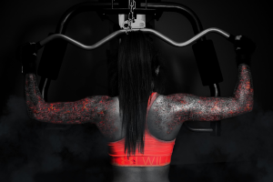
こんにちは．
(この論文とは直接関係がありませんが，)DOMSについて説明したいと思います．
が，これは正しいとは限らないぞ！と警鐘を鳴らすのが今回の内容なわけです．
今回の研究で行われた実験の被験者は，NA(事前訓練なし)，とPT(事前訓練あり=トレーニング経験者？)の2グループに分かれています．彼らには経験の有無関係なく，ほぼ同じ量の脚力トレーニングをこなしてもらいます．ただし，NAは8週間，PTは11週間をトレーニング期間としています．
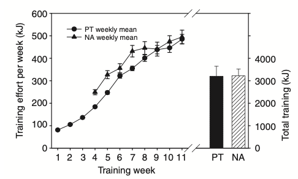この図は，NAとPTの各週におけるトレーニング量です．この図伝えたいことは，NAとPTどちらもトレーニングの量が週ごとに増えており，実験中の総トレーニング量がほぼ一緒ということです．
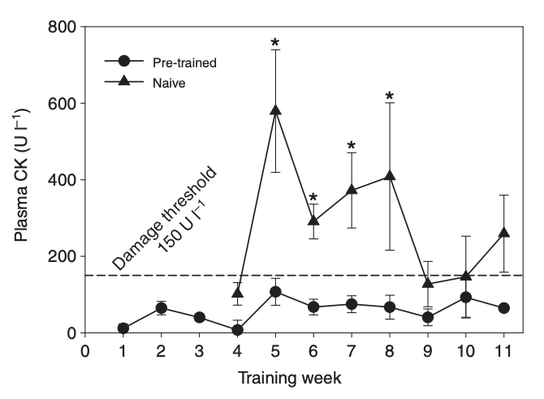この図は，PlasmaCK(プラズマクレアチンキナーゼ)という筋肉の損傷時に発生する酵素を計測したグラフです．値が大きいほど，筋肉の繊維が壊れたという事になります．その損傷が回復した時に，筋力アップが見込めるということです．
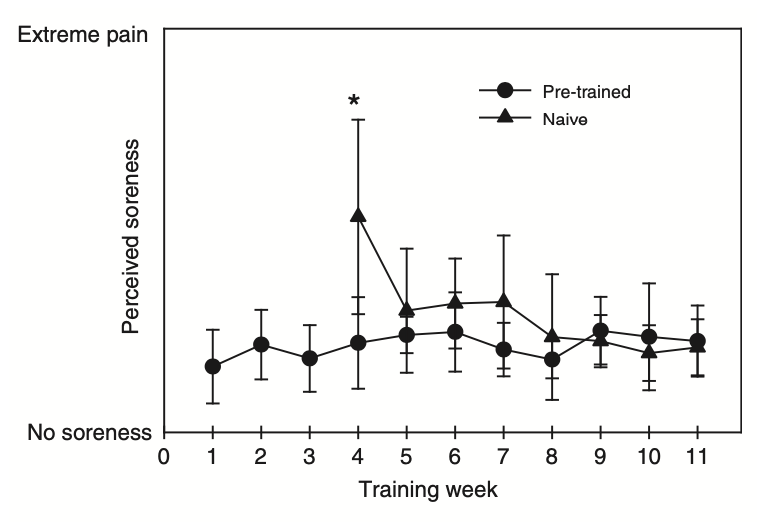
この図は，被験者が感じている痛みを「被験者自身が判断して」評価したグラフです．このグラフは先ほどのPlasmaCKのグラフと相関があると予測できるはずです．なぜなら，PlasmaCKは筋繊維の損傷度合いを表す指標であり，筋繊維が壊れたということは，筋肉痛を感じるはずです．
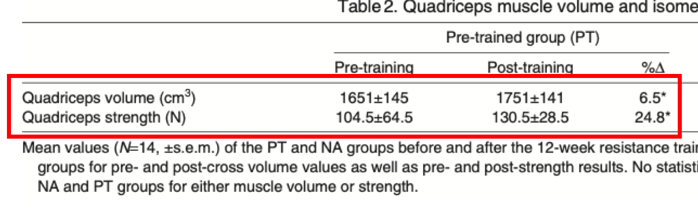 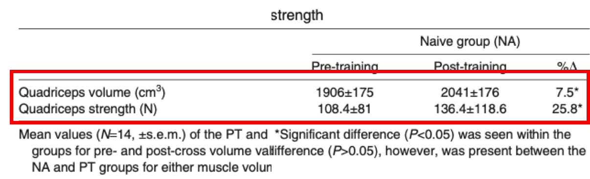上の表がPTの筋トレ成果，下の表がNAの筋トレ成果になります．成果の内容は，脚の「体積」と「パワー」です．
いかがだったでしょうか．この研究が筋肉痛は筋肉の成長と関係ないかもしれないよということを示しました．これが「DOMSは筋肉を助けない」．私の言いたいことです．
 はじめに
はじめに
こんにちは．
今回は，筋トレの効率について勉強していたところ，面白い論文を見つけたので，紹介したいと思います．論文のURLも載せておくので，原文が見たい方はそちらをご覧ください．
→ https://jeb.biologists.org/content/214/4/674
DOMSとは
(この論文とは直接関係がありませんが，)DOMSについて説明したいと思います．
DOMS(Delayed Onset Muscle Soreness：遅発性筋肉痛)とは，一般的に「筋肉痛」と言われる物の事です．過度な運動した日の翌朝，体が痛くて動かない時のあれです．DOMSは，筋肉の細かい繊維が運動によって損傷した事によって起こります．
筋肉は損傷すると，「超回復」を行って，筋肉を修復・増強します．つまり，筋肉は壊すほど育つというやつです．
なので，DOMS発生 = 筋肉が育つ予定！という等式が成立するという通説が一般的です．
「No pain No gain / 痛みなくして成長なし」とはよくいった物です
が，これは正しいとは限らないぞ！と警鐘を鳴らすのが今回の内容なわけです．
実験内容
今回の研究で行われた実験の被験者は，NA(事前訓練なし)，とPT(事前訓練あり=トレーニング経験者？)の2グループに分かれています．彼らには経験の有無関係なく，ほぼ同じ量の脚力トレーニングをこなしてもらいます．ただし，NAは8週間，PTは11週間をトレーニング期間としています．
のちの結果に示されますが，NAとPTの脚の太さは違いますが，脚力はほぼ一緒のところからスタートしています．
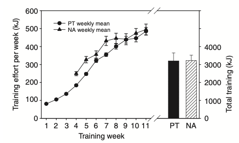
この図は，NAとPTの各週におけるトレーニング量です．この図伝えたいことは，NAとPTどちらもトレーニングの量が週ごとに増えており，実験中の総トレーニング量がほぼ一緒ということです．
被験者たちは期間中，下半身トレーニングのみを行い続け，「筋肉が感じている痛み」と「筋肉の太さ・強さ」を同時に測定し続け，「痛み」と「成長」の関係を追っていきました．測定の方法については割愛します．
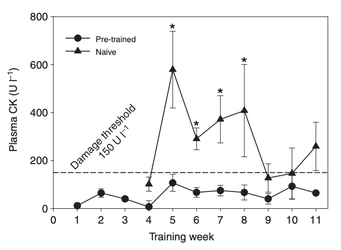
この図は，PlasmaCK(プラズマクレアチンキナーゼ)という筋肉の損傷時に発生する酵素を計測したグラフです．値が大きいほど，筋肉の繊維が壊れたという事になります．その損傷が回復した時に，筋力アップが見込めるということです．
まず特徴的なのが，NAとPTが同じだけのトレーニングをしているのに，筋肉の損傷度合いが違うということです，これは単純に筋トレ経験者であるPTの筋力が元々高いので，損傷も少ないと思えば直感的に理解でき，納得できます．
もう一つ特徴的なのが，NAが回数を重ねるごとに筋肉損傷が抑えられていき，トレーニングに適応している様子が見えることです．トレーニング量は毎週増えているのにです．これは面白いですね．
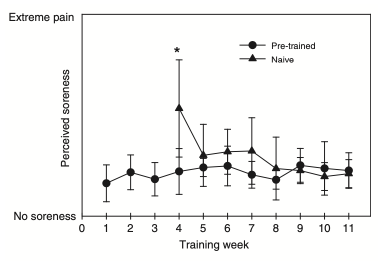
この図は，被験者が感じている痛みを「被験者自身が判断して」評価したグラフです．このグラフは先ほどのPlasmaCKのグラフと相関があると予測できるはずです．なぜなら，PlasmaCKは筋繊維の損傷度合いを表す指標であり，筋繊維が壊れたということは，筋肉痛を感じるはずです．
その予測通り，NAは初週に激しい痛みを経験していますし，PTは一貫して強い痛みは感じていません．
さて，ここまでおさらいするとこうなります．NAとPTは同じだけのトレーニングをこなし，NAは強い痛みを感じながらも頑張ってトレーニングをやり遂げた．ということです．成果はどうなったのでしょうか．次の表でそれが示されます．
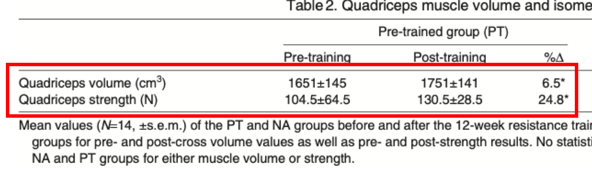 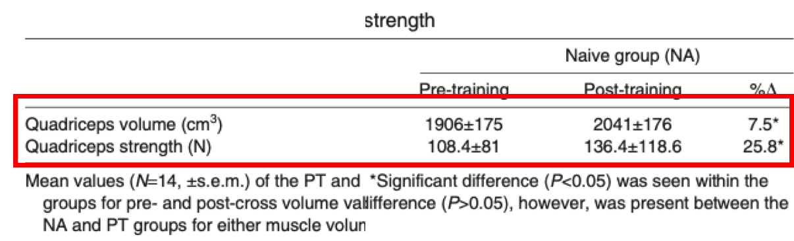